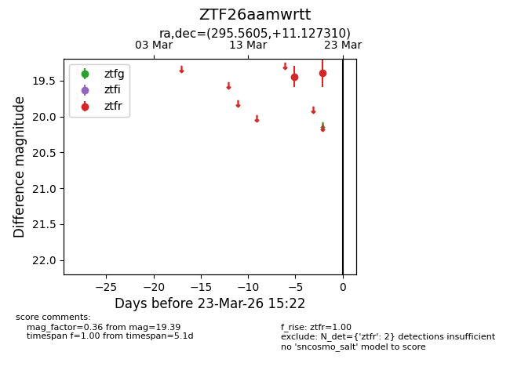
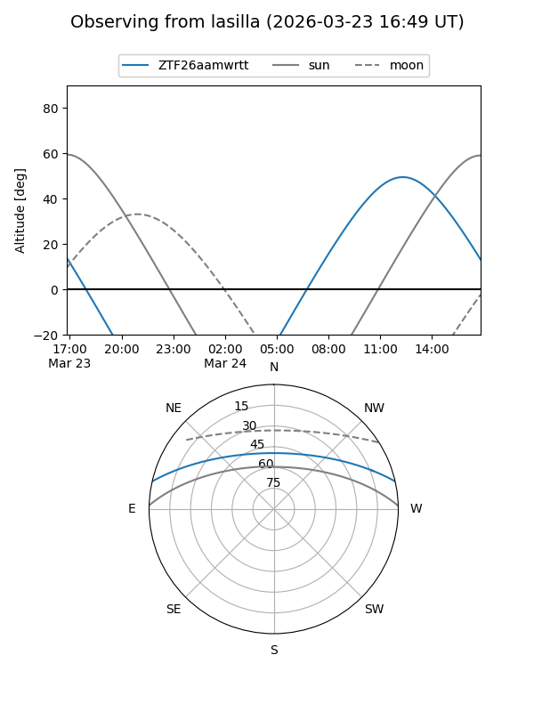
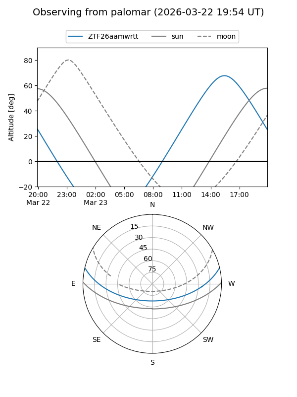
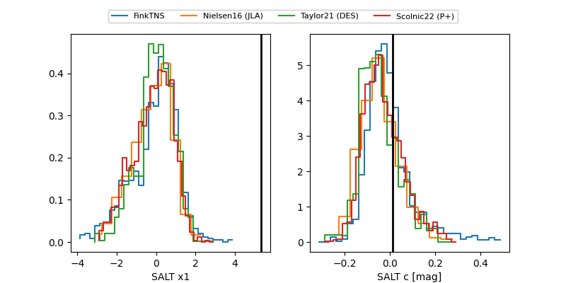

ZTF26aamwrtt
Target ZTF26aamwrtt at 2026-03-23 15:24
Aliases and brokers:
FINK: link
Lasair: link
ALeRCE: link
alt names
ZTF26aamwrtt (ztf,fink_ztf)
Coordinates:
equatorial (ra, dec) = 295.5605,+11.12731
equatorial (HMS+DMS) = 19:42:14.52,+11:07:38.32
galactic (l, b) = (48.6915,-5.96939)
Flags:
Photometry:
last ztfr=19.39
2 ztfr detections
Lightcurve

Visibility


Additional plots
